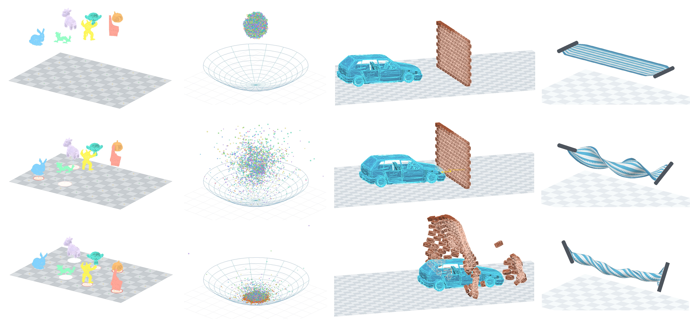
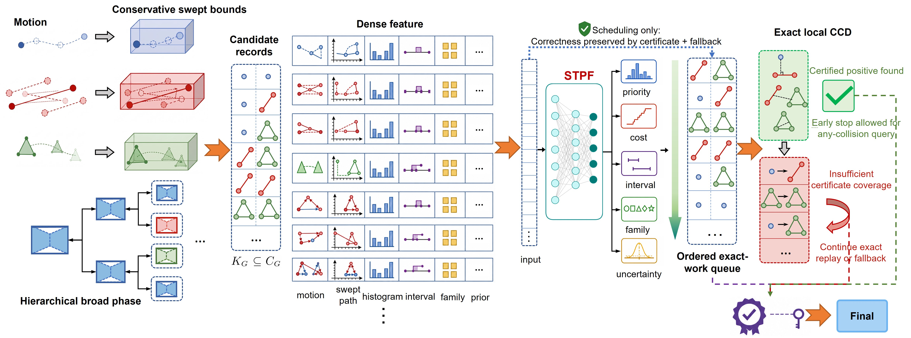

P2C-CCD: A Proposal-to-Certificate Framework for Certified Continuous Collision Detection
Continuous collision detection (CCD) is essential for robust physical simulation, animation, and robotic modeling in contact-rich environments. The key challenge is to discard impossible primitive-time pairs while maintaining conservative certificates that prevent missed collisions. Recent advances in hardware ray tracing and learned collision proxies offer acceleration methods, but neither traversal nor prediction alone provides the geometric guarantees required for CCD. We present P2C-CCD, a proposal-to-certificate framework that separates CCD into conservative candidate generation, learned scheduling with a spatiotemporal proposal field, and exact local certification with conservative fallback. The learned component is not a collision oracle; it ranks dense candidate groups to expose decisive exact certificates earlier and reduce redundant certification work. Every final decision is produced by exact certification or exhaustive fallback, so P2C-CCD preserves the no-missed-collision guarantee independently of model accuracy. We evaluate P2C-CCD on dense CAD and large mesh workloads from public datasets, including ABC, Fusion 360 Gallery Assembly, Thingi10K, ShapeNetCore, Tight-Inclusion CCD, and a custom high-density contact dataset. Our quantitative benchmarks cover about 69 million traceable CCD evaluation units, while supplementary dense-scene audits expose more than 390 billion potential pair units before proposal filtering. In dense and complex scenarios, P2C-CCD reduces exact certificate evaluations by up to two orders of magnitude and reports zero false negatives across all evaluated benchmarks, with the largest gains when exact CCD certification dominates runtime.

Representative Cases from the Paper
Many Particles Falling into a Bowl
A large set of particles drops into a bowl and accumulates under dense interaction, giving the project a clear particle-rich scene with visible crowding and settling.
Standard Graphics Multi-Model Drop
A graphics-style multi-model falling scene built from the paper's standard model family, showing repeated support contact across several classic shapes in one view.
Car-Wall Impact
High-speed rigid impact from the paper's car-wall swept-impact family, used here as a direct project-facing showcase case with visible approach, contact, and collapse.
Twisting Towel Self-Contact
The towel-wringer sequence highlights large deformable motion, twist build-up, and late self-contact in a visually direct cloth-style scenario.
Cloth-Funnel Contact Replay
A funnel-guided cloth contact sequence that shows release, entry, draping, and dense local interaction around the funnel interior.
Sphere-Funnel Accumulation
Sequential spheres interact with the funnel wall and throat before settling into accumulation, providing a clear staged-contact replay.
Method Overview

1. Conservative Envelope
Broad phase and BVH traversal are used only to produce a conservative candidate envelope. They do not make the final collision decision.
2. STPF Scheduling
The Spatiotemporal Proposal Field scores dense candidate rows and prioritizes likely decisive certificates inside that already-conservative envelope.
3. Exact CCD or Fallback
Every accepted positive or negative still comes from exact certification or conservative replay. Scheduling errors cost extra work, not correctness.
4. Dense Any-Hit Target
The gains are strongest when dense groups contain decisive positives and exact certification dominates cost. Sparse primitive workloads remain a separate regime.
Conservative Candidate Groups
→
STPF Priority Order
→
Exact CCD / Fallback Replay
Interactive View
All four interactive entries are rebuilt as web-friendly 3D orbit viewers from the paper cases, with replay sampling and explicit outer-surface rendering so the browser stays responsive without collapsing the visible contact structure.
Acknowledgement
Acknowledgements are intentionally withheld for double-blind review. Funding, institutional support, and contributor thanks will be restored in the camera-ready version.
Citation
If you refer to this project page or the associated manuscript, please use the anonymous citation below during review.
@misc{p2c_ccd_2026,
title = {P2C-CCD: A Proposal-to-Certificate Framework for Certified Continuous Collision Detection},
author = {Anonymous Authors},
year = {2026},
note = {Under review}
}